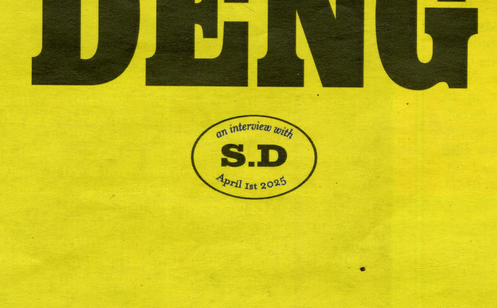

Alongside Neat Rodanant, we interviewed Sharlene Deng, a multidisciplinary graphic designer based in NYC, about her practice, her time at RISD, and her journey as a graphic designer.
Drawing inspiration from New York magazine spreads, each conversation from the interview was designed to feel like a separate story. Given the range of her multidisciplinary practice, it felt important to reflect that through difference in design and color; showcasing the distinct voices and skills that define her work.

Stamp on front cover
Close-up of page 3 featuring a spread from Cult Classic's volume 6